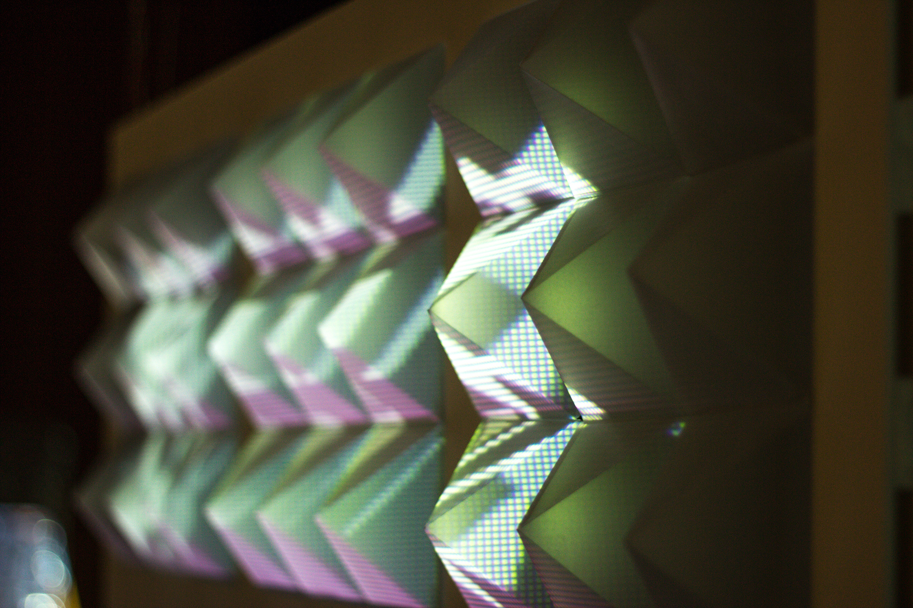
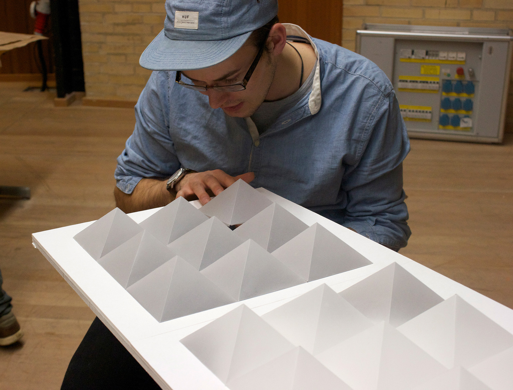
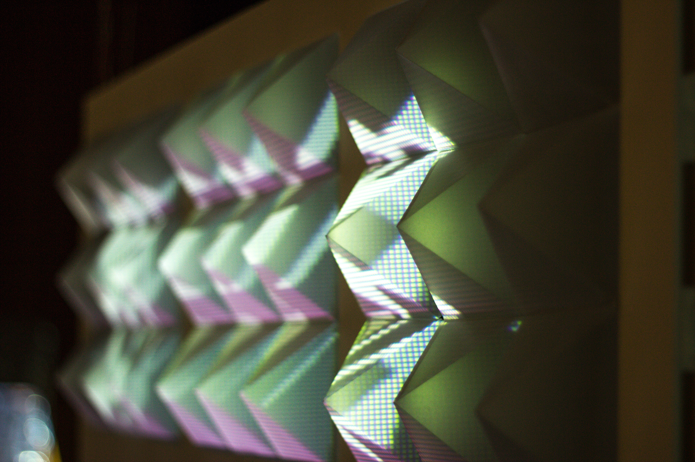
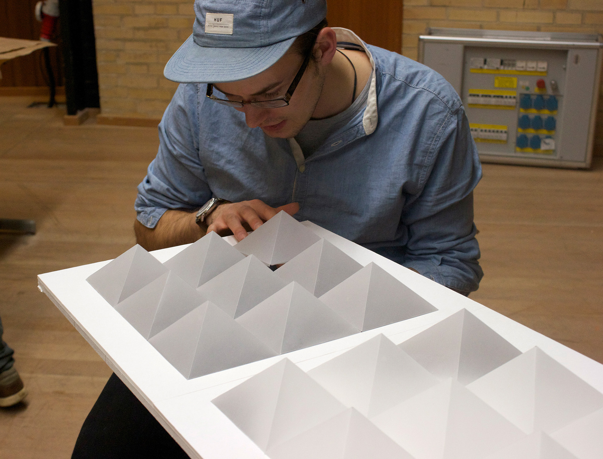
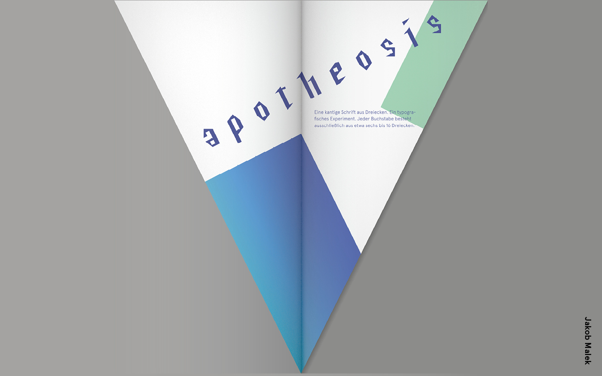
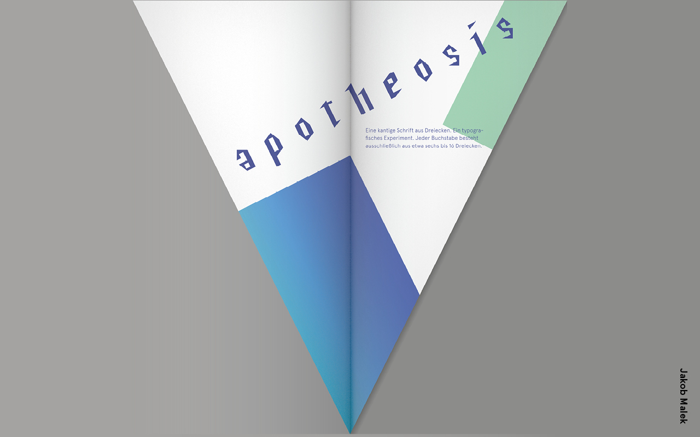

Ziel als Kommunikationsdesigner im Studiengang
Die Änderung der öffentlichen Meinung in Bezug auf KI ist ein entscheidender Schritt zur Verringerung ihrer Gefahren. Durch die Erstellung ansprechender und informativer Materialien wie Chatbots, räumlichen Installationen, Social-Media-Kampagnen, Websites, Infografiken und Videos kann ich das Bewusstsein der Öffentlichkeit für die Vor- und Nachteile von KI erhöhen und ihr Verständnis dafür verbessern. Als ersten Schritt will ich mich für die Interessen von marginalisierten Personen einsetzen, die von Vorurteilen in den Large Language Models und ähnlichen Systemen betroffen sind, um die Wahrscheinlichkeit zu erhöhen, dass KI in einer Weise entwickelt wird, die Sicherheit, Ethik und Übereinstimmung mit unseren Werten priorisiert, und die Menschheit auch zukünftige mächtige KIs überleben wird.
Kooperation im Studiengang
Um die mit künstlicher Intelligenz verbundenen Risiken effektiv zu mindern, ist ein vielschichtiger Ansatz notwendig, der Expert:innen aus verschiedenen Bereichen einbezieht, darunter Informatik, Ethik, Philosophie und Politik. Als Person, die sich mit all diesen Disziplinen auseinandergesetzt hat, besitze ich eine besondere Perspektive, die bei der Bewältigung dieser Herausforderung von Bedeutung ist. In Zusammenarbeit mit Expert:innen aus verschiedenen Bereichen kann ich bei der Vermittlung der Bedeutung der Entwicklung ethischer und sicherheitstechnischer Standards für KI-Systeme helfen, um sicherzustellen, dass sie auf verantwortungsvolle und nachhaltige Weise entwickelt werden. Durch die Nutzung meiner Kreativität, technischen Expertise und Kommunikationsfähigkeiten für diese kritische Herausforderung möchte ich dafür einen Beitrag leisten.
Projekte
An dieser Stelle möchte ich eine Auswahl meiner Projekte präsentieren, die von Interesse im Bezug auf den Design and Computation Studiengang sind. Von der New Practices Site inspiriert, möchte ich diese in vier Kategorien aufteilen: Kunst, Theorie, Technologie und Wissenschaft.
Mein Ziel ist Theorie und Wissenschaft als Grundlage für Design, im Sinne von guter Kommunikation, zu nutzen — und so Technologie zielgerichtet einzusetzen. Um so wiederum Technologie auf verschiedene Arten zu erfahren und hinterfragen.
Projekte im Detail
Protosoph
Entschlüsselung komplexer Theorie durch Verortung und Informationsanreicherung


Das fehlende Kapitel
Protosoph ist ein Printmedium, das als fehlendes erstes Kapitel zu komplexen Texten konzipiert ist und die Vordenker Adornos erforscht. Die erste Ausgabe befasst sich mit dem intellektuellen Titanen Karl Marx und seinem Opus Magnum, "Das Kapital". Die ersten Seiten dieser Abhandlung stellen mit ihren komplizierten Formulierungen und ihrem tiefgründigen Vokabular, das Marx' rigorosen Studien der Hegelschen Philosophie und Geschichte entstammt, eine gewaltige Herausforderung dar. In der Tat können sich einige Begriffe dem Verständnis des Uneingeweihten entziehen. Daher enthält die erste Ausgabe von Protosoph das gesamte Kapitel über den Warenfetischismus aus dem "Kapital", das ein wahres Vergnügen beim Durchlesen ist. Prägnante Erklärungen zentraler Begriffe dienen der weiteren Vertiefung des Textes. Darüber hinaus steht eine modernisierte Interpretation des Marxschen Werks im Einklang mit dem Primärtext. Die großzügigen Seiten einer Zeitung sind ein perfektes Gefäß für diese Nebenkomponenten und bieten dem Haupttext und seinen Anmerkungen genügend Raum zur Entfaltung.
Bezug zu Design And Computation
Durch die Umsetzung dieses Projektes konnte ich mein Verständnis für die effektive Vermittlung von Informationen vertiefen und gleichzeitig meine Fähigkeiten im Bereich der Gestaltung und visuellen Kommunikation verbessern. Das Projekt zeigt meine Fähigkeit, komplexe Themen auf eine zugängliche und ästhetisch ansprechende Weise darzustellen. Darüber hinaus konnte ich meine Fähigkeit zur kritischen Reflexion und Anwendung von theoretischen Konzepten unter Beweis stellen, indem ich den Text von Karl Marx mit Gestaltungselementen und Marginalien angereichert habe. Das Projekt ist somit ein Beispiel für meine Fähigkeit, akademische Inhalte auf innovative und kreative Weise zu präsentieren und dabei gleichzeitig die Bedeutung der Gestaltung für die Vermittlung von Wissen zu berücksichtigen.
Percept
Eine zweiwöchentlich erscheinende Zeitung, die aktuelle Ereignisse mit gesellschaftlichen Themen wie etwa Einkommensungleichheit und Klimaentwicklung verknüpft, um den Bezug von aktuellen Nachrichten zu übergeordneten Entwicklungen aufzuzeigen.


Nachrichten einordnen
Eine Zeitung, die über die Oberfläche der neuesten Nachrichten hinausgeht, um die tieferen Zusammenhänge zu erforschen. Ich habe die redaktionellen Grafiken für diese Publikation konzipiert, gestaltet und erstellt und dabei mein Fachwissen im Bereich der visuellen Kommunikation genutzt, um ein beeindruckendes visuelles Erlebnis für die Leser:innen zu schaffen. Um die Tiefe der Artikel visuell zu vermitteln, habe ich mich auf die Typografie konzentriert und prägnante und leistungsstarke Schriftarten verwendet, die die Ernsthaftigkeit des Inhalts vermitteln. Sorgsam ausgewählte Fotos und Illustrationen erwecken den Text zum Leben, machen ihn fesselnder und ermutigen die Leser:innen, tiefer in die Materie einzutauchen. Meine Design-Philosophie betont klare Kontraste zwischen den Elementen, mit großzügiger Verwendung von Leerraum, um jeder Seite ein Gefühl von Raum zum Atmen zu geben. Um ein kohärentes Erscheinungsbild der gesamten Publikation zu gewährleisten, habe ich ein ausgeklügeltes Raster verwendet, das dem Aufbau jeder Seite zugrunde liegt.
Bezug zu Design And Computation
Das Ziel ist es, die Kraft des Designs zu nutzen, um komplexe Ideen auf ansprechende und zugängliche Weise zu vermitteln. Auch das Percept Projekt zeigt dieses Motiv. Der gekonnte Umgang mit Schrift ist essenziell in allen Medien – auf Bildschirmen, auf Papier, in Stein und im Lehm.
Ephil
Visuelle Interpretation elektronischer Musiktechniken wie Sampling, Modulation und Zufallsverfahren, um einen anderen Blick auf den kreativen Prozess in diesen Kunstformen zu erhalten


Mein Beitrag
Ich habe diese vier interaktiven Installationen für Ephil entworfen, eine Konzertreihe mit einigen unglaublichen experimentellen elektronischen Musikern wie Alva Noto und Vladislav Delay. Das Video gibt einen Überblick über alle an dem Projekt beteiligten Designer:innen. Mein Beitrag zu diesem Projekt bestand darin, interaktive Visualisierungen von Klang und elektronischen Musiktechniken auf die großen Glastüren zu projizieren. Ich war für das Konzept, die Programmierung, das Bildmaterial und die Videos verantwortlich.
Eine der Projektionen ist eine Hommage an das berühmte Albumcover von Joy Division. Für diese Projektion haben wir mit Mikrofonen im Raum die Geräusche der Umgebung eingefangen und in weiße Wellenformen umgewandelt, die in ihrer Kombination einer Landschaft ähneln. Wenn Schall in Elektrizität umgewandelt wird, eröffnen sich eine Reihe von Interpretationsmöglichkeiten, z. B. durch die Umwandlung in Binärcode und die anschließende Verwendung dieses Codes zur Erstellung einer visuellen Darstellung, z. B. einer Wellenform.
Bezug zu Design And Computation
Verbindung von Vermittlung mit modernen Technologien und ein ästhetisches Erleben von Musik und Visualisierungen durch direkte Interaktion des Publikums. Dieses Projekt verbindet Design und Technologie auf experimentelle Weise für eine neue Perspektive auf elektronische Musik. Für mich ist das eine spannende Art der Kommunikation, die ich mit den neuen Möglichkeiten von Large Language Models verknüpfen möchte.
THRST
Ein Spiel, das die Gemeinschaft fördert, indem es Menschen dazu ermutigt, spielerische Gruppen zu bilden, indem sie verschiedene Orte erkunden.

Rollen
Während meine spezifische Rolle darin bestand, das gesamte Konzept zu entwickeln und die Benutzeroberfläche, Piktogramme und Illustrationen zu entwerfen, war es eine echte Gemeinschaftsarbeit, die spezifischen Spielmechanismen zu entwickeln und alles mit der technischen Umsetzung zusammenzubringen. Ich bin dankbar für die Möglichkeit, an der Seite solch talentierter Menschen an dem Projekt mitgewirkt zu haben.
Bezug zu Design And Computation
Ein Location-based Game Konzept. Auseinandersetzung mit der Frage, wie Technologie zu spontanen Interaktionen in der Realität beitragen kann – etwa als spielerische Vernetzungsmöglichkeit für Kongresse. Das Projekt steht auch symbolisch für meine intensive Auseinandersetzung mit Gamification. Besonders beeindruckt hat mich die Perspektive in Huizingas Buch Homo Ludens. Das Axiom,dass der Mensch seine kulturellen Fähigkeiten vor allem über das Spiel entwickelt, ist inspirierend.
Motion
Erforschung der Beziehung zwischen Beobachter:in und Beobachtung durch Motion Tracking und Projektionen
 



Motion
Das Ziel ist es, ein Gefühl von Immersion und Beteiligung zu schaffen, die Betrachter:innen näher heranzuziehen und dann in eine jenseitige Erscheinung überzugehen, die die Betrachter:innen dafür belohnt, dass sie sich ihr nähern, und sie zu weiterer Beteiligung ermutigt. Das Konzept und die Programmierung mit VVVV waren mein Part bei diesem Projekt.
Bezug zu Design And Computation
Auseinandersetzung mit Skeletal Tracking Systems, wie Kinect, und deren Möglichkeiten für räumliche Installationen. Dieses Projekt verbindet Kommunikationsdesign mit neuen Technologien auf eine explorative Weise.
Apotheosis
Modulares Schriftsystem, das aus dreieckigen Formen besteht, die auf der Grundlage von Benutzereingaben dynamisch verändert werden können, was ein anpassungsfähiges Schriftbild ermöglicht.

 

About Apotheosis
Ich habe diese Schrift zuerst mit Fontlab entworfen und sie dann in Javascript implementiert. Sie ist inspiriert von der Einfachheit eines rechtwinkligen Dreiecks, bei dem eine Seite 1 Einheit und die andere 2 Einheiten misst. Durch die Kombination zweier Dreiecke entsteht ein Rechteck, was die Erstellung der Schrift zu einem Kinderspiel macht. Darüber hinaus entwickelt die Schrift ein Eigenleben, indem sie auf Benutzereingaben wie Mausbewegungen reagiert, was zu Variationen führt, die über die traditionellen fetten oder schrägen Stile hinausgehen.
Bezug zu Design And Computation
Auseinandersetzung mit der Kombination von Type Design und Code. Erkundung der gestalterischen Möglichkeiten von Programmierung für die Gestaltung von Typen.
Projekt Idee
Ein mögliches Projekt, das Design, Informatik, Kunst und Forschung integriert, wäre ein individueller AI-Chatbot, der dabei hilft, die Risiken von KI zu vermitteln.
Zunächst könnte ich Teil eines Teams sein, das umfassende Forschungen zu den Risiken und bewährten Praktiken von KI durchführt, um sicherzustellen, dass die Chatbots aktuell und präzise sind. Anschließend könnte ich meine Codierkenntnisse nutzen, um in Zusammenarbeit mit Informatik-Expert:innen benutzerfreundliche und visuell ansprechende Chatbots zu gestalten, die Informationen über KI-Risiken und bewährte Praktiken liefern. Dazu können die Bereitstellung von einfachen Erklärungen komplexer KI-Konzepte und die Beantwortung häufig gestellter Fragen gehören.
Als Kommunikationsdesigner könnte ich auch meine Fähigkeiten nutzen, um intuitive und leicht verständliche Benutzeroberflächen für diese Chatbots zu erstellen, indem ich auch Elemente wie Infografiken und Videos einbeziehe, um wichtige Informationen auf leicht verständliche Weise zu vermitteln.
Wenn beispielsweise ein Benutzer nach den Risiken von KI im Gesundheitswesen fragt, könnte der Chatbot Informationen über mögliche Verzerrungen in medizinischen Daten und die Bedeutung von Transparenz und Rechenschaftspflicht bei KI-gestützten medizinischen Entscheidungen liefern. Es könnte auch relevante Berichte, Artikel und andere Ressourcen zur weiteren Lektüre bereitstellen. Durch die Bereitstellung genauer und zugänglicher Informationen könnte der Chatbot dazu beitragen, das Bewusstsein und Verständnis für KI-Risiken und bewährte Praktiken zu erhöhen.
CV
Bildung | |
|---|---|
| 2012 | Wimbledon College Of Art, University Of The Arts London, BA Fine Arts: Time-based Media, Auslands-Semester |
| 2011–2015 | BA Kommunikationsdesign, HAW Hamburg, Endnote 1,12 |
| 2008–2010 | BA Illustration, HAW Hamburg |
| 1985 | Geburt |
Beruf |
Designer, Lecturer, Project Manager |
|---|---|
| 2021–2022 | Schwere Gehirnerschütterung und Rehabilitationszeit — Symptome komplett Abgeklungen. Python gelernt. |
| 2017–2021 | Project Design Manager bei Centerline Design für Airbus, DLR – Deutsches Institut für Luft- und Raumfahrt, DB – Deutsche Bahn |
| 2016, ́17 | Dozent fuÃàr Design an der Beijing Normal University Zhuhai |
| seit 2010 | Freelancer fuÃàr diverse Kunden wie HAW Hamburg, UniversitaÃàt Hamburg, PIASTA, Hafencity UniversitaÃàt, und andere |
| 2009,’10,’11 | Seminarleiter beim HAW TSE Programm |
| 2009 | Leitung von Workshops in Game Design |
| 2008 | Privatunterricht in Zeichnen, Malerei, Indesign und Photoshop |